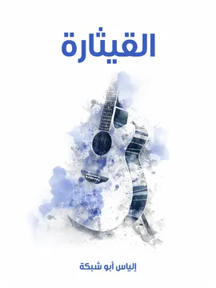

القيثارة

قراءة عربية أصلية محددة النطاق في الصفحات 11، 12 من ملف PDF المرتبط، وليست تلخيصا كاملا للكتاب. نناقش ما تدعمه هذه المقاطع فقط.
قيثارة أبو شبكة
يفتتح الديوان بقصيدة يجيب فيها الشاعر أبناءه إن سألوا عنه: يا كنودا، يا محاباة قومي صاما، يا منكري... ثم يخاطب بلاده: يا بلادي استاقرت بي، يا بلادي كفاك هزءا بنفسي، ويطلب أن يتركوه ينشد أغاني حبه، فإن شعره أبقى من التيجان. وترد في الصفحات المقروءة أبيات يعلن فيها ثورته المكتومة: إن في صدري الزفير زئير جمرة يستطير منها السعير، ومخاطبة لمعريه الضرير ما زال حيا. شعر أبو شبكة هنا على عهد مدرسة الرومنطيقية العربية: نزعة وجدانية مشتعلة، وتمرد على القيود، وإيمان بخلود الكلمة الشعرية فوق زوال السلطان.
زاوية وحدود القراءة
قراءة الصفحتين ١١-١٢ (قصائد من مطلع الديوان)؛ النطاق القصائد المقروءة فقط، لا الديوان كاملا.
الطبعة والقراءة
يُطالعنا من بين طيَّات هذا الديوان الأول لصاحبه، وجهُ «إلياس أبو شبكة» مستقبِلًا عشرينيات شبابه بميراثٍ من اليُتم مع تشبُّثٍ بالقِيم العُليا وعلوِّ الهِمة، فاليدُ الأثيمة التي امتدَّت إلى والده فسلبته حياتَه ودفءَ معانقته أبناءه؛ تلك اليدُ لم تستطع أن تنزع الذ
تنزيل PDF المجاني ↓ القراءة والمصدر الرسمي ↗